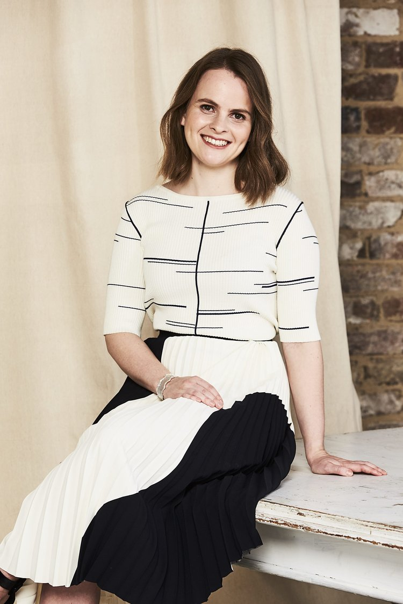
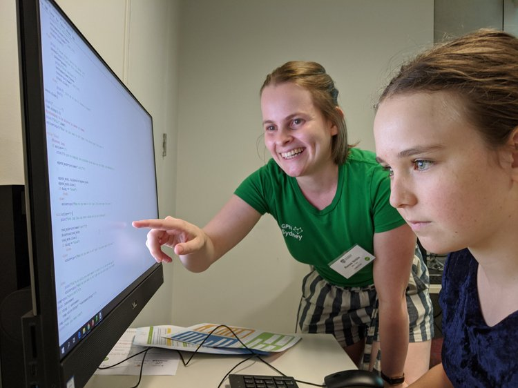
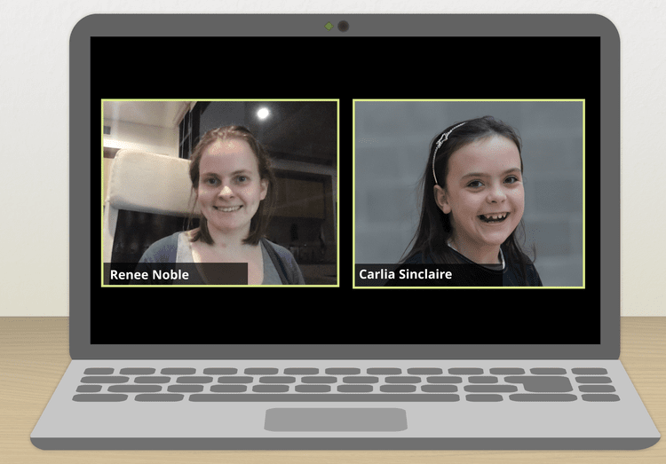
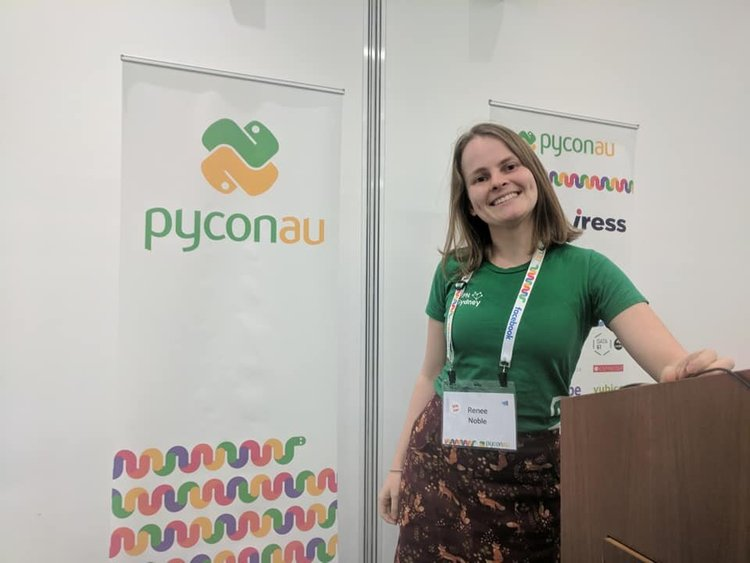
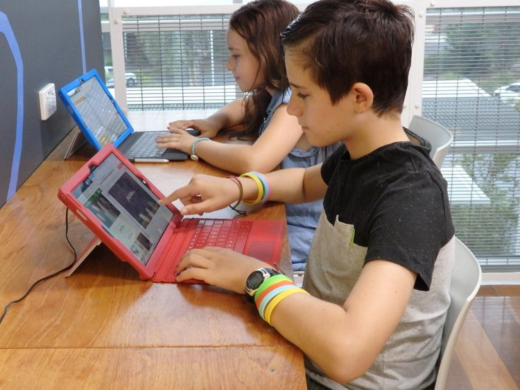

Hi I'm Renee, CEO and founder of ConnectEd Code.
In this time of educational turbulence, I'm hoping to support students to stay engaged and up to speed at school, and to provide exciting educational after-school options to keep kids entertained in lockdown.
School teachers are working hard to make online classes as good as they can be for all of their students. But, with limited time online with their teachers it can be difficult for kids to stay excited, keep up with content, or ask for help. It's fallen to parents to keep kids engaged with school, manage progress, and answer questions, whilst keeping up with work and life.
I'd love to work with your family to work out what learning support looks like for you and your children. Maybe it's:
While ConnectEd Code is primarily targeted at STEM education, I'm happy to chat with you about how I can support your students with other subjects, activities, and learning needs.
To chat about how I can support you and your children email renee@connectedcode.org or use the form on the Contact Us page.

For simplicity and safety under the current restrictions, most sessions take place online over video chat. In these sessions your student, or group of students, will have my undivided attention and we can take the session wherever needed to assist with the goals you have laid out, and the needs of your child.
For school related learning, I can help students with work assigned by their teacher, or I can come up with new engaging activities to enable your student to connect with and practise difficult concepts.
For student extension work or extra curricular activities, I'll give students projects that help them take their understanding to the next level, and show them how they can make real world impact with their knowledge.
If students require specific project materials and equipment for their sessions, learning kits will be delivered to homes via mail or dropped off by myself, where permitted by lockdown restrictions.

Security deposit on electronics projects kits — $100–$150 (loaned to you, delivered to your home)

In addition to running ConnectEd Code I also:
I'm well known in the STEM education space, having attracted several accolades including:
I have a long history of teaching and working in education, having spent much of my career working as a web developer and content creator for an education technology company. I've also taught everything from gymnastics, to summer camps, to swing dancing with students aged from 5 to 75. I'm passionate about making learning accessible and exciting for all my students.
I have a background in computer science, engineering, and chemistry with a Combined Bachelors of Engineering (Chemical & Biomolecular, Hons First Class) and Bachelors of Science (Computer Science, Chemistry) from the University of Sydney.
